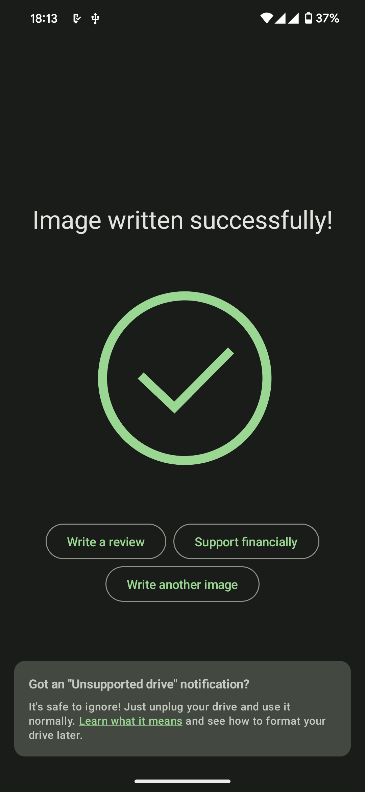

EtchDroid 到底值不值得掏钱——一个免费工具的决策账本
EtchDroid 本身免费，但要不要为它配套的 OTG 线、随身 U 盘、甚至放弃买便携笔记本？分三类人算账，结论给你对号入座。
先抛问题：一个免费工具，账该怎么算？
EtchDroid 是个完全免费的东西——EtchDroid官网上直接下、F-Droid 也有镜像、GitHub 开源仓库自己编译也行，无广告、无内购、无任何付费解锁项。按理说免费工具不该有"值不值得掏钱"的疑问。
但你换个角度想：它的核心价值在于把你的安卓手机变成了一个随身启动盘制作器。这意味着它能替代的东西是：一台随身笔记本（最便宜也要两千块起步）、每次应急找酒店租电脑的人情债（¥200+/晚）、装机店跑腿费（¥50/次）。这些都是真实的成本——要么花钱，要么花时间，要么花面子。
所以这本账，算的不是"要不要为 EtchDroid 本身付费"，而是"要不要为它能替你省掉的那些成本，掏出 OTG 线（几块钱）和一个随身 U 盘（几十块）"。以及更狠的：已经有一台便携本的人，要不要把它塞进包里替代这堆小玩意儿？
定价拆解：免费版到底给了什么
EtchDroid 没有付费版，所以"定价拆解"在这里等于"功能边界拆解"——它能做什么、做不了什么，直接决定了它在你工具箱里的位置。
完全免费给到的能力：
- 支持混合 ISO 直接写入（Ubuntu、Debian、Fedora、Arch、Tails、Kali 等现代 Linux 发行版全覆盖）
- 支持
.img镜像（树莓派、Armbian 等嵌入式设备） - 写入过程有实时进度条和速度显示
- 写入完成后自动校验，不是写完就不管
- 直接访问 U 盘或 SD 卡，不需要 root
明显不做的事：
- 不做自动解压——
.xz、.zip、.7z格式一律拒绝，必须手动解压后再选 - 不支持
.dmg、.vhd、.vdi、.qcow2这些小众格式 - 不支持苹果的 DMG 镜像（v1.9 rc1 之后直接移除了支持）
- 不做文件系统修复、不做分区管理——写完 U 盘就完事，后续 resize 什么的全不管
- 不做任何广告、不收集用户数据——开源社区维护的项目，这一点你可以放心
功能边界划得非常清晰，EtchDroid文档里对每个边界都有明确说明：它只做"把镜像原样扇区写入 USB 设备"这一件事，其他全是文件管理器或发行版本身的职责。这不是能力不足，是产品决策——越聚焦，应急的时候越不容易掉链子。

分三类人算账
账要分开算——不同使用强度的人，时间成本差得远。
轻度用户：偶尔写个树莓派镜像
场景：买了个树莓派玩 Home Assistant，半年烧一次系统。或者帮朋友的笔记本装个 Ubuntu，一年也就一两回。
免费版够不够？ 完全够。OTG 线 + 一个 32GB U 盘，硬件成本加起来不到 ¥30。解压那步麻烦点？MT 文件管理器或 Solid Explorer 都能处理 .xz，一次也就两分钟的事。
付费替代方案： 没必要。你烧完镜像 EtchDroid 就闲置在那了，买个便携本纯属浪费。真要应急借个电脑就行，一年一次的频率，人情债还得起。
每单位时间成本： 几乎为零。你本来就要花时间装系统，EtchDroid 只是把"找台电脑"这个步骤换成了"掏出手机"。
主力用户：出差党的救命稻草
场景：你是运维、售前、咨询顾问，经常带客户笔记本出门。或者是学生党，寝室电脑挂了又急着赶作业。
免费版够不够？ 够，但要补硬件——必须确保手机支持 OTG，随身 U 盘不能省（推荐 32GB 起步，USB 3.0 的）。这两个加起来 ¥50~¥80，比一顿外卖贵不了多少。
省的是什么？ 省的是"找一台能装系统的电脑"这个环节。我去年在深圳出差，客户现场演示前半小时笔记本引导崩了，手边没有第二台电脑、网吧也找不到。掏出手机、酒店 WiFi 下 Ubuntu ISO、用EtchDroid下载好的 App 烧 U 盘，前后花了 18 分钟。如果没这个东西，我要么花 ¥300 找旁边电脑店跑腿，要么推迟演示——后者损失的口碑远不止三百。
算笔硬账： 假设你一年用 5 次，每次省掉 30 分钟找电脑的时间 + 可能的打车费。EtchDroid 硬件成本 ¥80，相当于每次应急 ¥16，比电脑店便宜多了，而且不受时间地点限制。
唯一的隐形成本： OTG 写盘的速度比电脑 USB 口慢——手机 USB 2.0 口写入 3GB ISO 可能要 8~10 分钟，电脑 USB 3.0 口 2 分钟搞定。应急用差这几分钟无所谓，日常批量刷的话还是电脑端工具效率高。

重度用户：IT 运维 / 装机店
场景：一天刷三台树莓派、周末帮朋友装系统、手里永远有一堆待写的 U 盘。
免费版够不够？ 日常批量刷的话，还是电脑端工具效率高——balenaEtcher 或 Rufus 三秒一个，EtchDroid 在这个场景下是备胎。但备胎的价值恰恰在"电脑不在身边的时候"。
要不要为 EtchDroid 付费？ 不用。但建议配一个 USB 3.0 的 Type-C OTG 转接头（¥20 左右），写入速度能提不少。以及手机别选太老的——Android 6.0 以下的 Scoped Storage 限制可能导致读取大文件时出问题。
替代方案：不装 EtchDroid 你还有什么路
方案一：随身带一台便携本
最便宜的轻本也要 ¥1800（比如酷比魔方的 mini Book），好点的 ThinkPad X1 Nano 要上万。好处当然不只是能写 U 盘——查资料、写代码、改文档、开热点全能干。但代价是：
- 包里多了一公斤东西，出差党深有体会
- 电池要维护，久不用会亏电
- 丢了心疼
适用人群： 本来就需要带电脑出差的人——那 EtchDroid 就是手机上的备胎，两边都备着。
方案二：每次应急找电脑店
¥50~¥100 一次，立等可取。优点是不用自己折腾，缺点是：
- 深夜/节假日可能找不到开门的店
- 不确定人家会不会用 EtchDroid 还是用老毛桃（装出一堆广告）
- 偏远地方根本没电脑店
适用人群： 偶尔应急一次、对电脑不熟悉、愿意花钱省时间的人。但说实话，EtchDroid 的学习成本几乎为零——点三个按钮的事。
方案三：云装机
阿里云 ECS 临时实例 + 远程桌面，应急装系统的话至少要 ¥2/小时 + 公网 IP 费。而且你得有稳定网络、得会配 ISO 挂载——比 EtchDroid 复杂多了，成本也更高。
结论：三类人对号入座
| 人群 | 要不要"掏钱"（硬件成本） | 理由 |
|---|---|---|
| 轻度用户（年使用 ≤2 次） | 忍忍，不用专门买 | 硬件成本省了，真要用的时候临时买 OTG 线也行，电商当日达 |
| 主力用户（出差党/学生党/运维） | 闭眼掏 ¥50~¥80 | 每次应急省半小时 + 打车费，5 次就回本；酒店深夜崩系统时的救命稻草 |
| 重度用户（IT 运维/装机店） | 不需要专门为它付费 | 电脑端工具效率更高，EtchDroid 只是备胎；但手机里装上不亏 |
最后说句实在的：EtchDroid 是那种你不知道需要它的时候觉得完全没用，一旦用上一次就再也离不开的工具。我装它的时候也觉得"一个安卓 App 能干嘛"，直到那次深圳出差的 18 分钟救了场。之后 OTG 线和 U 盘就一直塞在电脑包侧袋里了——不贵，但安心。整理好的安装包和说明我同步在了 GitHub、Gitee、GitCode，国内访问哪个快就选哪个。